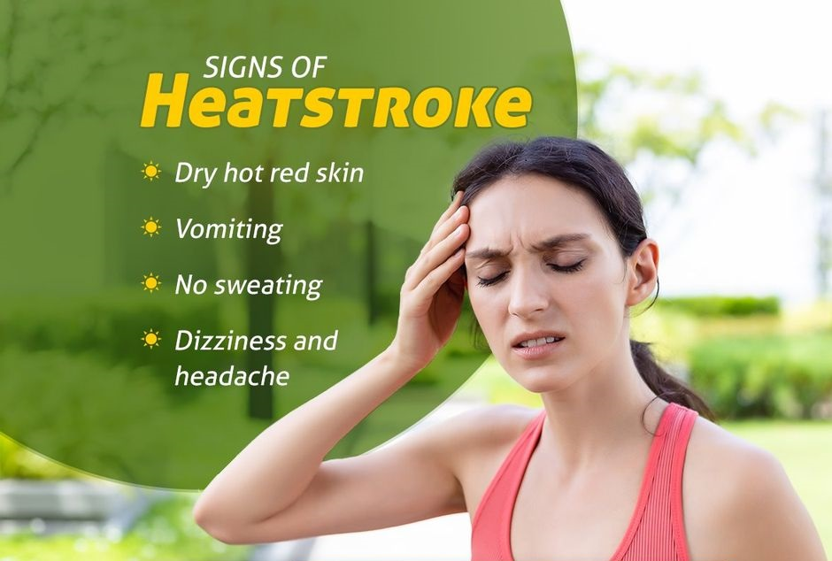
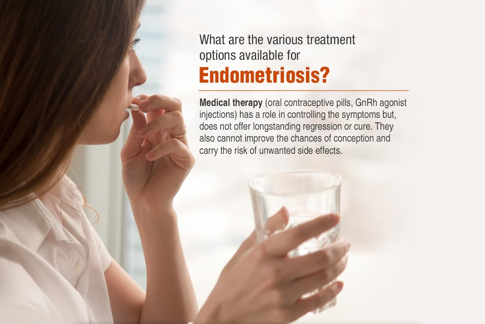

1-Traditional food systems :
Overexposure to the sun during peak summer hours especially between 11 am and 4 pm may lead to extreme loss of fluid and electrolytes and may even make the person unconscious. Children, seniors, athletes and outdoor workers are at a greater risk. Hydrate the person and ask them to take a cold water shower for immediate relief.

2-Endometriosis :
Endometriosis has no cure! There are medical treatments that suppress symptoms (sometimes). There are surgical treatments that remove the disease. But there is no way to prevent the recurrence of the disease

Open heart surgery can be avoided :
Results of experiments that announce their results on Sunday showed that replacement heart valves by Medtronic and its competitor Edwards Life Science are comparable to or better than open-heart surgery for younger patients, for whom the surgical intervention is less risky.